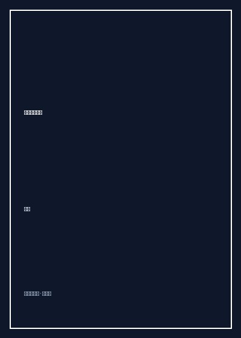

《我的高职学生》

总体观点
《我的高职学生》是一面照亮当代中国教育与阶层流动的镜子。在公众视线被清华北大等名校精英叙事全面垄断的时代，黄灯将镜头对准了占据中国高校招生半壁江山、却在舆论场中近乎隐形的高职高专学生群体。
作者通过十余年担任一线高职班主任的深度追踪，真实记录了这些大多来自农村衰落乡镇、留守儿童家庭与城市下岗平民阶层的普通孩子。他们过早遭遇中高考分流的挫败感，却在象牙塔边缘的流水线顶岗实习、考证与就业碾压中，展现出令人动容的坚韧与朴素生命力。它呼唤社会打破文凭至上主义，给予每一个普通劳动青年平等的尊严与上升通道。
核心观点
-
1. 被遮蔽的半壁江山：看见高职教育的真实底色
全国每年有上千万青年进入职业院校，他们不是“淘汰者”，而是未来中国制造业与现代服务业真正的基石力量，不应沦为精英叙事的注脚。
黄灯在开篇指出，高职学生的命运才是中国当代绝大多数普通家庭子弟最真实的晴雨表与现实写照。 -
2. 留守儿童的代际创伤与情感匮乏
高职学生普遍拥有父母外出打工、童年长期留守乡村的成长背景，童年亲情缺失导致的自卑、敏感与不安全感，成为他们青春期挥之不去的阴影。
许多学生在班主任谈心时痛哭流涕，坦言自己一生最大的愿望仅仅是“能够留在父母身边吃上一顿热乎的晚饭”。 -
3. 顶岗实习的困惑：廉价劳动力与专业教育的错位
部分高职院校为了完成指标，将学生成批送往电子厂流水线充当廉价暑期工，繁重机械的重复劳作极大消耗了学生对专业技能的热情。
学习会计专业的学生被安排在流水线上贴手机屏幕保护膜长达半年，一天站立十二小时，引发对职业教育价值的深刻困惑。 -
4. 普通青年在阶层固化缝隙中的艰难突围
尽管面临唯学历论的社会歧视，这群年轻孩子依然依靠专升本挑灯夜战、自学技能、考取焊工电工证书，在平凡生活中扎下坚实根系。
一名来自粤北山区的男生通过五年苦读成功通过专升本并最终考取公办研究生，用难以想象的毅力完成了人生的绝地反击。 -
5. 教育的真谛是让平凡的生命挺直腰杆
好的教育不是把所有人都塞进通往金字塔尖的狭窄通道，而是教会每一个普通人接纳平凡、掌握安身立命的手艺，拥有不自卑的健康心智。
黄灯在毕业典礼上勉励学生：“哪怕在这个世界上一辈子做一名普通的汽修工或出纳，你们劳动的双手依然值得世人最高的敬意。”
全书结构
-
第一辑：走出大山与留守童年
梳理高职学生的生源图谱：湘西、粤北、黔东南乡村家庭的生存实况，高考落榜后的迷茫与选择职业院校的现实考量。
细致还原多位学生初入大学校门时那双布满老茧的粗糙双手，以及行李箱里沉甸甸的家乡腊肉与土特产。 -
第二辑：象牙塔边缘的求学岁月
高职校园日常生态：实训车间的机器轰鸣、五花八门的考证大军、专升本图书馆占座的日夜苦战，以及与本科名校生相遇时的心理落差。
描写学生们为了考取初级会计电算化证书在机房通宵刷题，键盘敲击声在深夜校园空旷回荡的动人场景。 -
第三辑：流水线、房产中介与底层就业
毕业季众生相：珠三角制造业基地的招聘会现场，学生们如何被中介公司挑选、进入房产销售、催收客服等基层岗位摸爬滚打。
一位性格内向的女生在烈日下奔走于各大楼盘发传单，一个月穿破两双球鞋终于开出人生第一单的激动泪水。 -
第四辑：阶层固化下的突围与坚守
追踪毕业三至十年后学生的真实命运：有人回到家乡小镇考上乡镇公务员、有人创业开维修小店、有人成家立业在柴米油盐中守护平静幸福。
记录一位学生在大城市拼搏多年后回乡开养猪场，带领全村乡亲科学致富，展现出扎根大地的强大生存韧性。 -
第五辑：看见被时代遮蔽的隐形多数
全书思想总结：呼吁国家加大职业教育资源投入、打破机关企事业单位招聘中的第一学历歧视，重塑技术技能人才的社会尊严。
黄灯直陈：“衡量一个国家教育成功与否的标准，不在于培养了多少位拔尖的富豪与官员，而在于如何对待千千万万普通劳动者的孩子。”